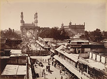

History of Charminar
The fifth ruler of the Qutb Shahi dynasty, Muhammad Quli Qutb Shah, built the Charminar in 1591 after shifting his capital from Golkonda to the newly formed city of Hyderabad."There are various theories regarding the purpose for which Charminar was constructed. However, it is widely accepted that Charminar was built at the centre of the city, to commemorate the eradication of plague", a deadly disease which was wide spread at that time. According to Jean de Thévenot, a French traveller of the 17th century whose narration was complemented with the available Persian texts, the Charminar was constructed in the year 1591 CE, to commemorate the beginning of the second Islamic millennium year (1000 AH). The event was celebrated far and wide in the Islamic world, thus Qutb Shah founded the city of Hyderabad to celebrate the event and commemorate it with the construction of this building.Due to its architecture it is also called as Arc de Triomphe of the east.
|  |
The Charminar was constructed at the intersection of the historical trade route that connects the city to international markets through the port city of Machilipatnam.The Old City of Hyderabad was designed with Charminar as its centerpiece.The city was spread around the Charminar in four different quadrants and chambers, segregated according to the established settlements. Towards the north of Charminar is the Char Kaman, or four gateways, constructed in the cardinal direction.Additional eminent architects from Persia were also invited to develop the city plan. The structure itself was intended to serve as a Mosque and Madarsa. It is of Indo-Islamic architecture style, incorporating Persian architectural elements.
Historian Masud Hussain Khan says that the construction of Charminar was completed in the year 1592, and that it is the city of Hyderabad which was actually founded in the year 1591.According to the book "Days of the Beloved", Qutb shah constructed the Charminar in the year 1589, on the very spot where he first glimpsed his future queen Bhagmati, and after her conversion to Islam, Qutb Shah renamed the city as "Hyderabad". Though the story was rejected by the historians and scholars, it became popular folklore among the locals.
.
Explore Charminar!

Places to eat
|

Best time to visit Charminar |

Things to do |

About Charminar |
How to reach Charminar |